UREĐAJI / TEHNIČKI PREGLED
Upoznajte uređaje.
Razumite sistem.
Princip rada, karakteristike i pitanja za izbor odgovarajuće konfiguracije.
UREĐAJI / VIESSMANN
Viessmann
Toplotne pumpe, klimatizacija i gasni kotlovi.

Viessmann
Vitocal 200-S
Split toplotna pumpa vazduh-voda. Spoljašnja i unutrašnja jedinica povezuju izvor toplote sa sistemom grejanja objekta.
- Sistem
- Vazduh-voda, split
- Primena
- Grejanje i hlađenje
- Upravljanje
- Vitotronic
- Povezivanje
- ViCare uz opcioni Vitoconnect
Za izbor varijante potrebni su proračun toplotnih gubitaka i podaci o instalaciji.
Pošalji upit
Viessmann
Vitocal 100-S
Split toplotna pumpa koja koristi spoljašnji vazduh kao izvor toplote. Unutrašnja jedinica povezuje uređaj sa vodenim sistemom grejanja.
- Sistem
- Vazduh-voda, split
- Upravljanje
- Vitotronic
- Postavljanje spoljašnje jedinice
- Podno ili zidno
- Hlađenje
- Kod reverzibilne AC verzije
Potrebna snaga i podrška za hlađenje proveravaju se za izabranu verziju.
Pošalji upit
Viessmann
Vitocal 250-A
Monoblok toplotna pumpa vazduh-voda za grejanje i hlađenje. Viša temperatura polaza omogućava razmatranje primene i pri modernizaciji grejanja.
- Sistem
- Vazduh-voda, monoblok
- Rashladno sredstvo
- R290
- Temperatura polaza
- Do 70 °C pri spoljnoj temperaturi -10 °C
- Povezivanje
- ViCare
Izbor varijante usklađuje se sa potrebama objekta i uslovima ugradnje.
Pošalji upit
Viessmann
Vitocal 222-S
Kompaktan split sistem sa integrisanim rezervoarom za toplu vodu. Objedinjuje opremu za grejanje i pripremu potrošne tople vode.
- Sistem
- Vazduh-voda, split
- Rezervoar tople vode
- Integrisani, 220 l
- Upravljanje
- Vitotronic
- Hlađenje
- U zavisnosti od verzije
Izbor varijante usklađuje se sa potrebama objekta i uslovima ugradnje.
Pošalji upit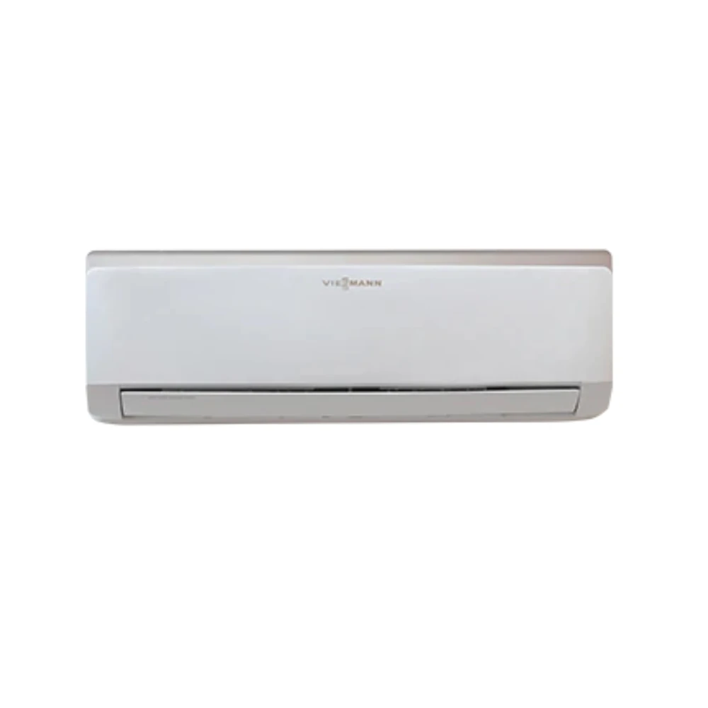
Viessmann
Vitoclima 200-S Comfort
Zidni single split klima-uređaj za grejanje i hlađenje prostora, sa infracrvenim daljinskim upravljačem.
- Izvedba
- Zidni single split
- Rashladno sredstvo
- R32
- Daljinski upravljač
- Infracrveni
- Senzor
- I feel, u daljinskom upravljaču
Snaga i raspoložive funkcije proveravaju se za konkretnu varijantu uređaja.
Pošalji upit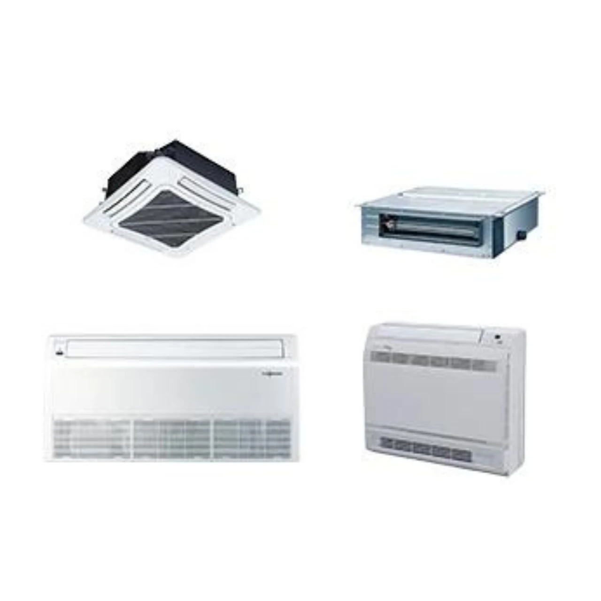
Viessmann
Vitoclima 300-S
Multisplit porodica za klimatizaciju više prostorija. Jedna spoljašnja jedinica povezuje se sa kompatibilnim unutrašnjim jedinicama.
- Izvedba
- Multisplit inverter
- Rashladno sredstvo
- R32
- Unutrašnje jedinice
- Do 5, zavisno od konfiguracije
- Regulacija
- I feel kod odgovarajuće jedinice
Fotografija prikazuje porodicu uređaja. Broj i kombinacija jedinica proveravaju se za konkretnu konfiguraciju.
Pošalji upit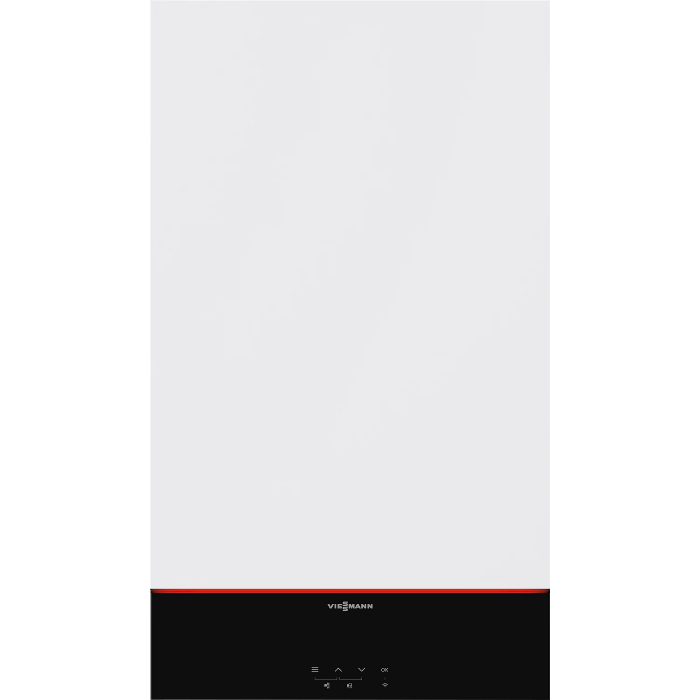
Viessmann
Vitodens 100-W
Zidni gasni kondenzacioni kotao. Porodica obuhvata sistemske i kombinovane varijante, za različite potrebe grejanja i pripreme tople vode.
- Tip uređaja
- Gasni kondenzacioni kotao
- Ugradnja
- Zidna
- Izmenjivač toplote
- Inox-Radial
- Gorionik
- MatriX-Plus
Izbor sistemske ili kombinovane varijante zavisi od potreba za toplom vodom i konfiguracije instalacije.
Pošalji upit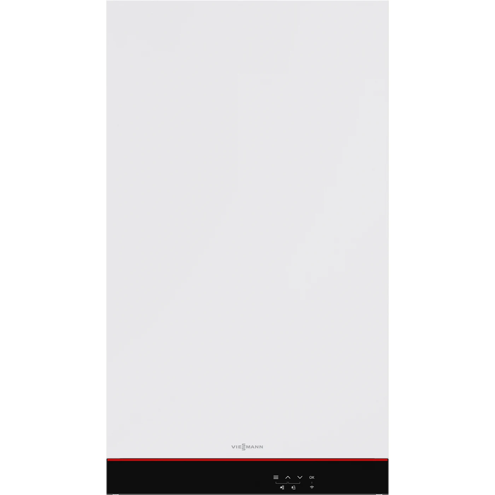
Viessmann
Vitodens 050-W
Kompaktan zidni gasni kondenzacioni kotao za grejanje stambenog prostora, sa sistemskim i kombinovanim varijantama.
- Tip uređaja
- Gasni kondenzacioni kotao
- Izmenjivač toplote
- Inox-Radial
- Gorionik
- MatriX-Plus
- Upravljanje
- LED displej i tasteri na dodir
WiFi oprema i priprema tople vode zavise od izabrane verzije.
Pošalji upit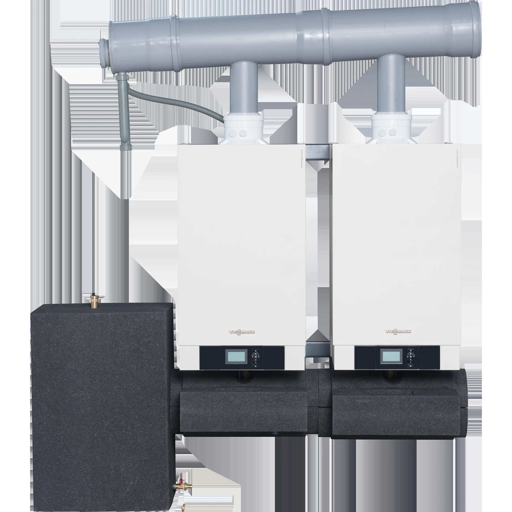
Viessmann
Vitodens 200-W
Porodica zidnih gasnih kondenzacionih kotlova za veće stambene, poslovne i javne objekte. Moguća je kaskadna konfiguracija.
- Tip
- Zidni kondenzacioni gasni kotao
- Opseg porodice
- 49-150 kW
- Izmenjivač
- Inox-Radial
- Gorionik
- MatriX
Opseg snage odnosi se na porodicu kotlova. Za objekat se bira konkretna snaga i konfiguracija.
Pošalji upit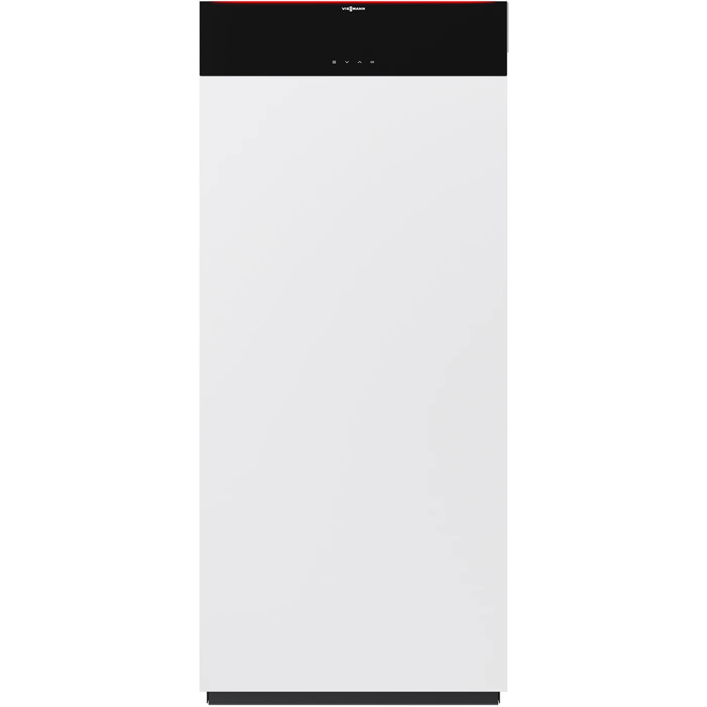
Viessmann
Vitodens 222-F
Podni kompaktni gasni kondenzacioni kotao sa integrisanim bojlerom za potrošnu toplu vodu.
- Postavljanje
- Podno
- Izmenjivač
- Inox-Radial
- Gorionik
- MatriX-Plus
- Topla voda
- Integrisani bojler, zavisno od varijante
Izbor varijante usklađuje se sa potrebama objekta i uslovima ugradnje.
Pošalji upitUREĐAJI / TOSHIBA
Toshiba
Zidne jedinice za klimatizaciju.
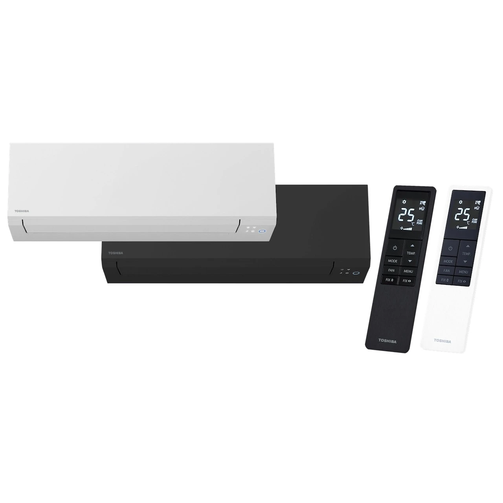
Toshiba
SHORAI EDGE B&W
Zidna klima-jedinica u beloj ili crnoj izvedbi. Namenjena je kompatibilnim single split i multisplit konfiguracijama.
- Izvedba
- Zidna unutrašnja jedinica
- Rashladno sredstvo
- R32 u odgovarajućem sistemu
- Završna obrada
- Bela ili crna
- Upravljanje
- Infracrveni daljinski upravljač
Izbor varijante usklađuje se sa potrebama objekta i uslovima ugradnje.
Pošalji upit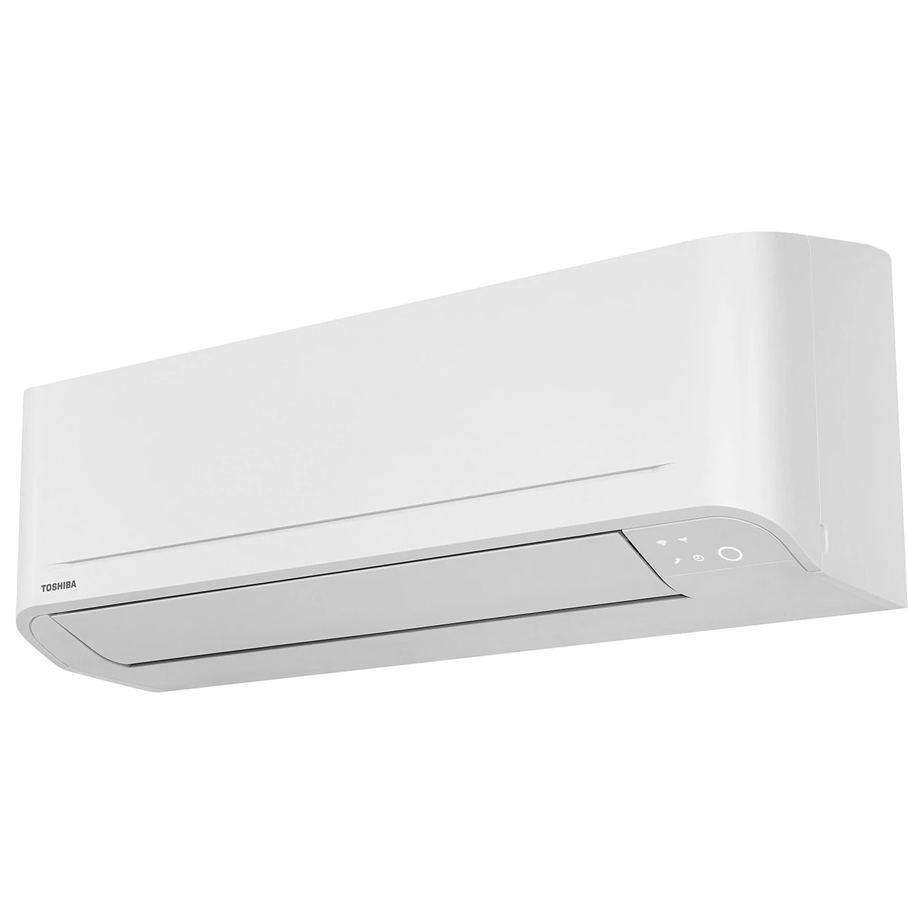
Toshiba
SEIYA NEW
Zidna klima-jedinica za svakodnevno grejanje i hlađenje u kompatibilnoj konfiguraciji. Filter se može prati, a funkcija sušenja pomaže održavanju unutrašnje jedinice.
- Izvedba
- Zidna unutrašnja jedinica
- Rashladno sredstvo
- R32 u odgovarajućem sistemu
- Filter
- Periv
- Upravljanje
- Infracrveni daljinski upravljač
Izbor varijante usklađuje se sa potrebama objekta i uslovima ugradnje.
Pošalji upitUREĐAJI / GRUNDFOS
Grundfos
Pumpe za vodu i hidroforski sklopovi.
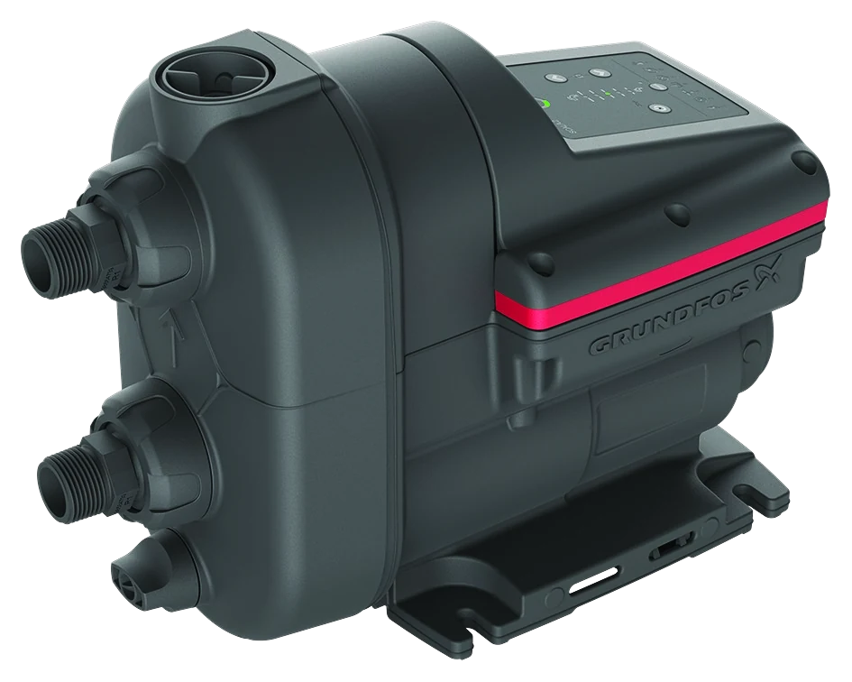
Grundfos
SCALA2
Kompaktna pumpa sa integrisanim upravljanjem za podizanje pritiska vode u domaćinstvu. Regulacija prilagođava rad promenama potrošnje.
- Porodica
- SCALA2 3-45
- Maks. visina dizanja
- 45 m
- Maks. sistemski pritisak
- 10 bar
- Medijum
- Čista voda
Maksimalna visina dizanja i sistemski pritisak su različite karakteristike. Radna tačka zavisi od protoka; električna varijanta bira se posebno.
Pošalji upit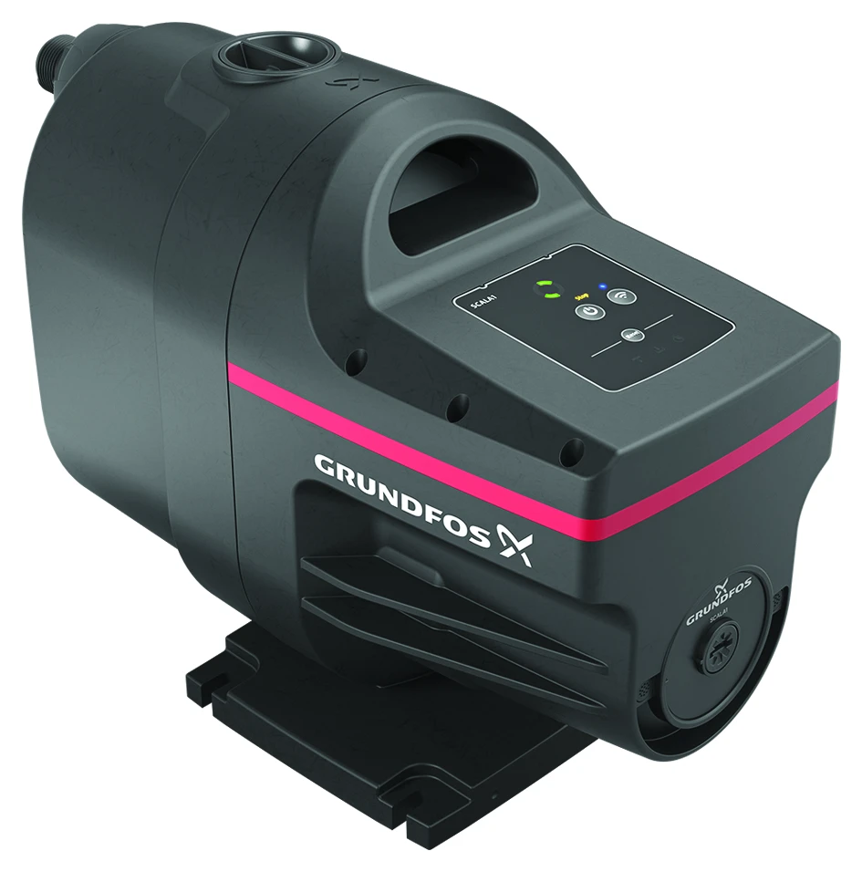
Grundfos
SCALA1
Samousisna višestepena pumpa sa integrisanim upravljanjem za snabdevanje vodom. Automatski se uključuje i isključuje prema potrošnji.
- Izvedba
- Integrisani uređaj za podizanje pritiska
- Upravljanje
- Automatsko uključivanje i isključivanje
- Povezivanje
- Bluetooth / Grundfos GO
- Zaštita
- Od rada na suvo
SCALA1 se razlikuje od SCALA2: automatsko uključivanje ne znači frekventnu regulaciju konstantnog pritiska.
Pošalji upitUREĐAJI / JASIC
JASIC
Zavarivanje i plazma sečenje.
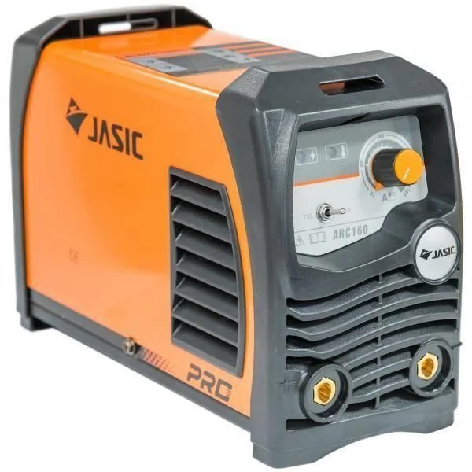
JASIC
ARC 160 Analog Z211
Jednofazni inverterski aparat za REL i kontaktno TIG zavarivanje, sa analognim upravljanjem.
- Tačan model
- ARC 160 Analog Z211
- Postupci
- REL / kontaktni TIG
- Struja zavarivanja
- 10-160 A
- Izvedba na izvoru
- Bez dodatne opreme
Izbor pribora i radni uslovi usklađuju se sa postupkom zavarivanja i materijalom.
Pošalji upit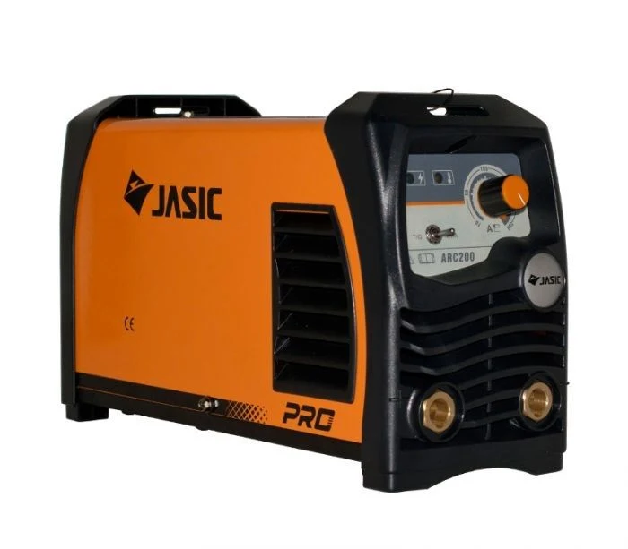
JASIC
ARC 200 Analog Z209
Jednofazni inverterski aparat za REL i kontaktno TIG zavarivanje, sa analognim podešavanjem.
- Tačan model
- ARC 200 Analog Z209
- Postupci
- REL / kontaktni TIG
- Struja zavarivanja
- 10-200 A
- Napajanje
- Jednofazno
Izbor elektroda, pribora i radnog režima usklađuje se sa materijalom i napajanjem.
Pošalji upit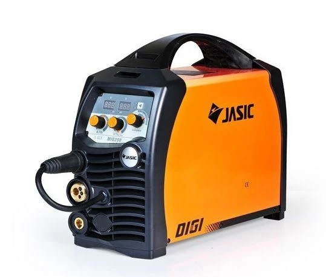
JASIC
MIG 200 N229
Jednofazni MIG/MAG inverterski aparat sa displejem. Pribor i zaštitni gas biraju se prema postupku i materijalu.
- Tačan model
- MIG 200 N229
- Postupak
- MIG/MAG
- Napajanje
- Jednofazno
- Upravljanje
- Displej
Izvedba sa dodatnom opremom i bez nje navedena je u izvoru. Sadržaj potrebnog kompleta proverava se posebno.
Pošalji upituređaja
JASIC
CUT 45 L206
Jednofazni plazma rezač sa displejem za obradu metala. Izbor gorionika i uslova rada zavisi od konkretnog zadatka.
- Tačan model
- CUT 45 L206
- Postupak
- Plazma sečenje
- Napajanje
- Jednofazno
- Upravljanje
- Displej
Gorionik, priprema vazduha i priključci proveravaju se za izabranu izvedbu.
Pošalji upitUREĐAJI / REFCO
REFCO
Merna i servisna oprema za rashladne sisteme.
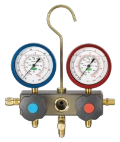
REFCO
M2-3-DELUXE-DS-R744
Dvoventilski manometarski blok za potkritične CO₂ rashladne sisteme, sa uljno punjenim manometrima.
- Rashladno sredstvo
- R744 (CO₂)
- Broj ventila
- 2
- Primena
- Potkritična, do 60 bar
- Klasa tačnosti
- 1.0
Nije univerzalni blok za sva rashladna sredstva. Radni opseg i kompatibilnost moraju odgovarati sistemu.
Pošalji upit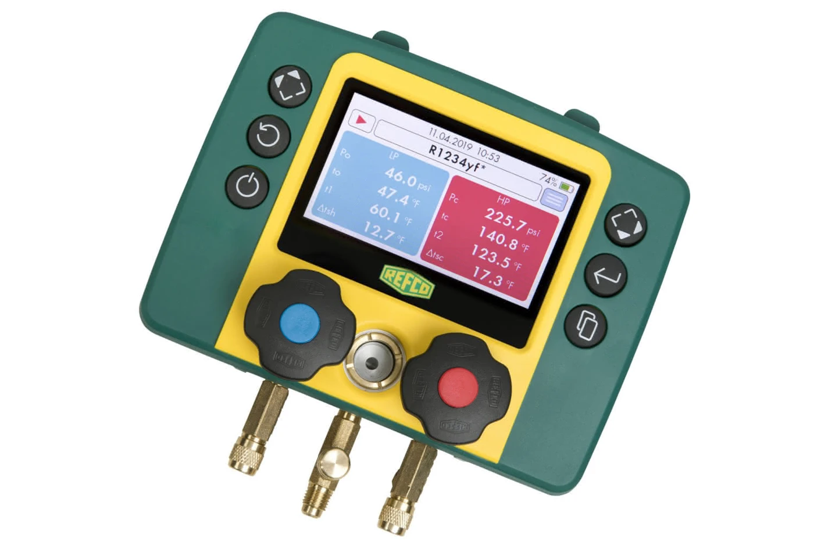
REFCO
REFMATE-2
Digitalni dvoventilski manometarski blok za merenje pritiska i temperature i prikaz pregrevanja i pothlađivanja.
- Broj ventila
- 2
- Displej
- TFT, 4,3 inča
- Senzori temperature
- K-tip
- Povezivanje
- REFMESH
Sastav kompleta i kompatibilnost sa rashladnim sredstvom proveravaju se za konkretnu izvedbu.
Pošalji upit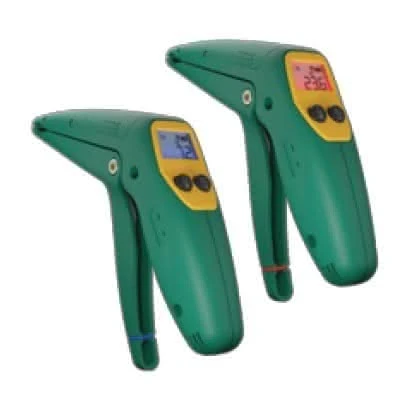
REFCO
REFCLAMP-SET
Bežične temperaturne klešta sa senzorom vlažnosti za merenja u rashladnim sistemima i toplotnim pumpama.
- Oznaka seta
- 4688733
- Merenje
- Temperatura cevi, vazduha i vlažnost
- Povezivanje
- REFMATE / REFMESH
- Prečnik cevi
- 5-44 mm
Set obuhvata dva komada. Mogućnosti merenja zavise od korišćenih senzora i povezanog uređaja.
Pošalji upit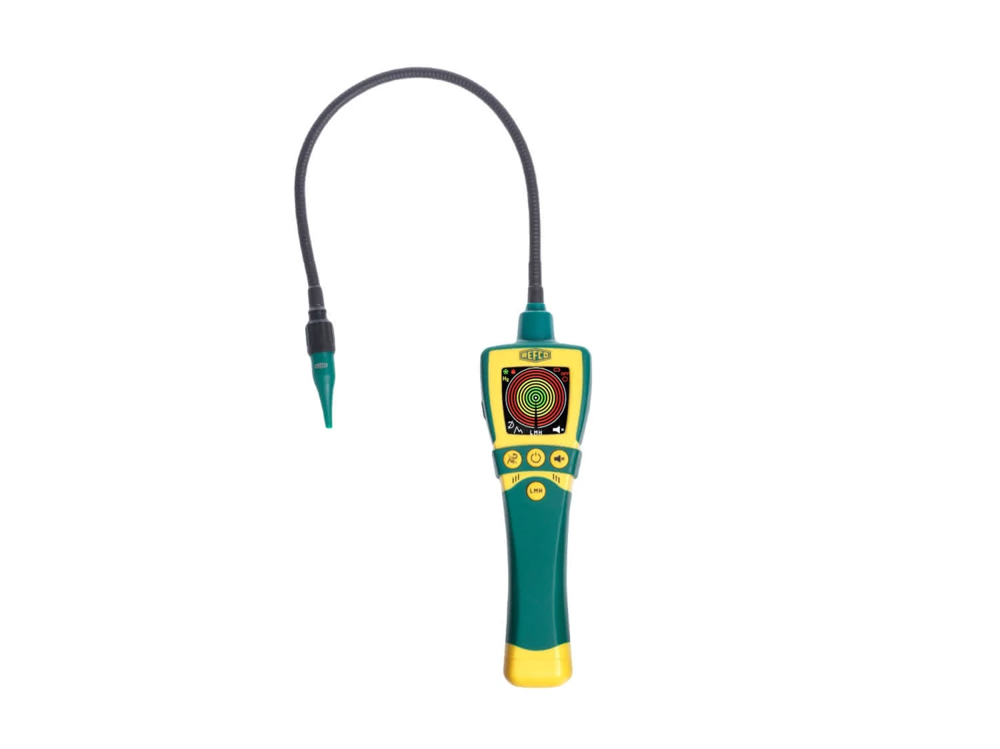
REFCO
TRITECTOR-R
Elektronski detektor curenja rashladnih sredstava sa zamenljivim senzorom, vizuelnim signalom i podesivom osetljivošću.
- Oznaka
- 4688375
- Namena
- Detekcija curenja rashladnih sredstava
- Signal
- LCD i zvučni
- Napajanje
- AA baterije ili USB
Detekcija drugih grupa gasova zahteva odgovarajući dodatni senzor. Prikazana je R izvedba.
Pošalji upit